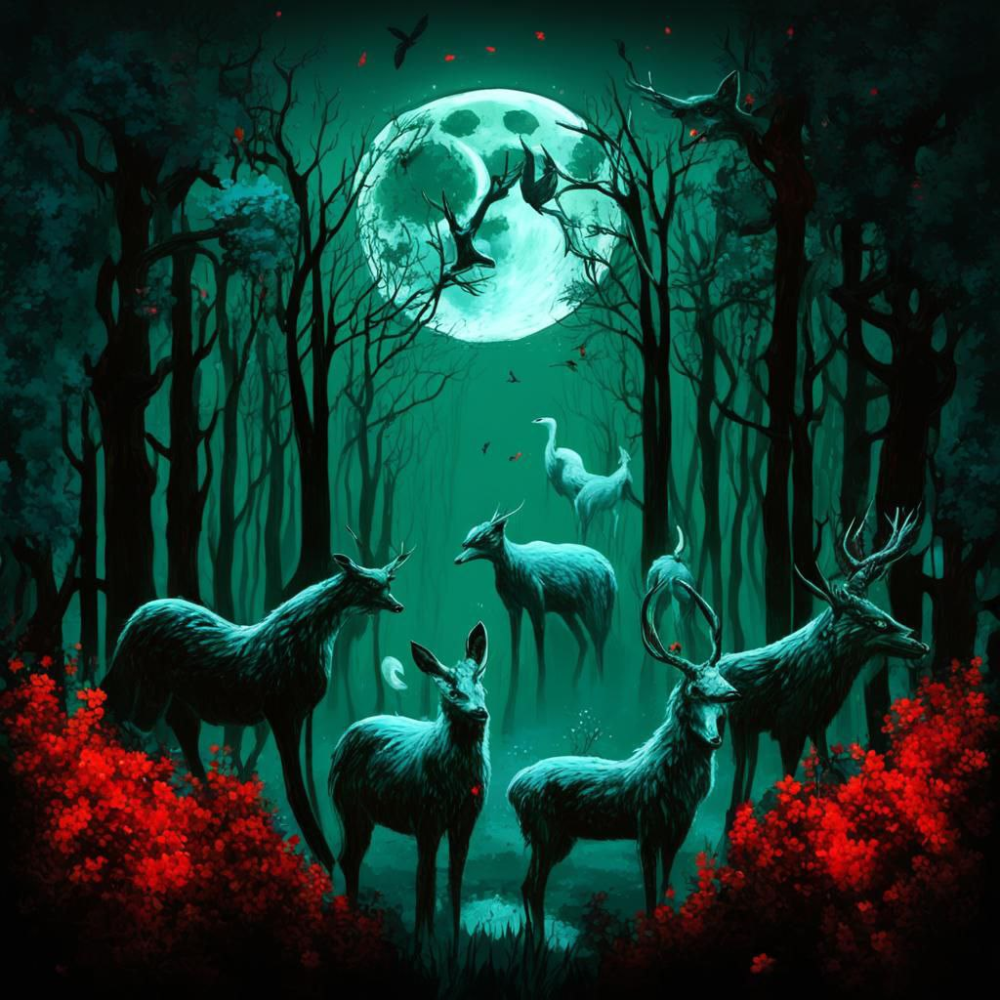

„Мой народ будет жить вечно, как вечен Лунный свет,
что освещает нам всем путь”, - Атрена Цветок Жимолости, Первая Жрица Луны
Лунная Матерь – верховное божество, сотворившее мир. Она является создательницей Великого Сна, священного пространства, где когда-то родился Баланс, шестёрка изначальных космических сил, Скверна и много ещё чего, с чем миру ещё предстоит столкнуться. Влияние Богини на вселенную необычайно велико, и даже самое незначительное стремление помочь может обернуться катаклизмом. Но как же не вмешиваться, если твои названные дети страдают?
„Звёзды поведают нам нашу судьбу; нужно лишь научиться их слушать”, - Львиный Оракул Сантрана
Совершенство – частичка сознания Лунной Матери, принявшая свой собственный облик и защищающая сладкую дрëму изначальной Богини от посягательств на еë разум. Совершенство всегда следует за Лунной Матерью, как зверь за своей хозяйкой, может поэтому это божество представляется россыпью звëзд на небосводе?
„Мир должен подчиняться хоть каким-то правилам,
чтобы не развалиться ещё больше”, - Рильантат Ранние Сумерки
Вãлар - единственный сын Лунной Матери, поддерживающий остатки Баланса. Мир уже сформировался неправильно, и Баланс в своей изначальной форме не может его контролировать. Скверна всё больше проникает в миры смертных; гниль Свидетели Смерти грозится поглотить мир; Тьма и Хаос желают отомстить Благословенному Союзу; Магия подчиняет себе всё больше других энергий. Как со всем этим справиться одному богу?
„Мы пестуем родича дикого зверя.
Стоит ли нам его опасаться?”, - Кромхель Вороний Клюв
Дева Лесов, Мать Природа – единственная дочь Лунной Матери, хранящая сакральную часть силы Жизни. Эта трепетная энергия неспособна навредить или как-то сама повлиять на мир смертных именно поэтому, Дева Лесов взяла её на попечение.
„Мы больше никогда не вернёмся в Великий Сон…
Первый волк мёртв – мы не найдём дорогу назад”, - Великий Змий

Первозвери – самые первые прообразы животных, что были созданы ещё Лунной Матерью во времена самой первой её дрёмы. В мир смертных эти существа вышли по зову Девы Лесов, чтобы по их подобию она создала животных. Но Великий Волк совершил акт богохульства, задумав пожрать Луну, и его настигла кара. С тех пор вернуться назад в Великий Сон первозверям не суждено – смерть одного из них слишком сильно связала их все с миром смертных.
„Причинность – основа мира, что я желаю видеть.
Никто больше не избежит наказания за свои проступки”, – Кандел
Кандел, богиня греха, мать всех демонов, императрица Ада, владычица Скверны, великая искупительница, черноволосая королева – смертный, что обрёл от Вãлара Скверну и частичку Баланса и возвысился до бога.
"Даже в слепящих Солнечных лучах я чувствую Её холодный белый свет", - Повелитель Великанов
Августейшая семья - род наделённых силой светил каменных великанов, что получили это благословение от Лунной Матери. Когда-то великаны жили вместе с эльфами на основной части материка, но, обретя своё сознание и став из послушных машин разумными существами, они захотели сепарироваться от влияния эльфийского общества. Эти гордые существа ушли далеко на юго-запад в высокие горы, где, закрыв проход назад, назад они основали своё королевство, во главе которого встал Повелитель Великанов, повелевающий солнцем. Как над основной частью континента никогда не взойдёт Солнце, так и над Седыми Горами никогда не взойдёт Луна.
"Оставь мёртвых в покое, если не желаешь гнить вместе с ними", - старая куртизанка Амелия
Богиня Гнили - обретшая силу богиня смерти. После событий Первородного Греха Баланс сотворил низших богов, среди которых была и богиня, что должна было олицетворяет собой принцип смерти, но,
так как она не могла черпать силу от своей изначальной космической энергии, она проиграла Богини Жизни и лишилась своего божественного статуса. С телами тех, в ком кончилась жизнь, нужно было что-то делать...
Гниль - отвратительное явление, что было искусственно создано. Заставить осквернять этой гнилью тела тех, о ком ты должна была заботиться, - не менее отвратительно.
Теперь, когда Смерть, вышла в мир часть покойников может восстать, направляемых гнилью, явиться в Запретные Земли и восславить свою богиню-покровительницу...
"Мы все здесь по разным причинам: кто-то готов самоотверженно служить, а кто-то готов платить", - Шёпот, Глас и Воля Богини
Шёпот - смертное существо, что отвергло своё физическое тело и слилось разумом с безымянной увечной богиней. После событий Первородного Греха Баланс породил низших богов, среди которых была богиня,
что должна была олицетворяют собой принцип сменяемости жизни и смерти. Но её, лишив бессмертия, сбросили в мир смертных, где в желании помочь его обитателям она перенимает от одного из них страшной проклятье,
что калечит её тело и истощает разум. В таком плачевном состоянии её находит один аристократ. Он забирает её в своё горное поместье, где чтобы продлить ей жизнь, объединяет их разум и души, разделяя это страшное проклятье.
За долгие годы Шёпот (так теперь следует называть его) создал закрытое общество для самых богатых и влиятельных смертных, что готовы платить непомерно высокие цены за возможность переродиться в объятиях богини.
"Свет и Порядок объединились, чтобы спасти всех нас в эру великого отчаяния, а еретики хотят ввергнуть мир в этот ужас назад", - Мираил Иерофант Благодати
Благословенный Союз – объединение Света и Порядка, двух изначальных космических энергий. После кары за Первородный Грех Свет, Тьма, Порядок, Хаос начали борьбу за влияние на смертных.
Договориться каким-то образом у них совершенно не получалось; Тьма начала захватывать всё больше, чем все остальные; Хаос отказался от насильственного подчинения смертных, из-за этого Порядок не может тоже влиять на мир.
Видя своё печальное положение Свет предлагает Порядку объединиться и захватить власть над миром. Вместе им удалось оттеснить служителей Тьмы и служителей Элементалей, установив свою власть, которая держится и по сей день.
Фанатики Благословенного Союза до сих пор охотятся на всех неверных, исключая стран эльфийской короны и их союзников, хотя они и не признают их божеств, но вступать в прямое противостояние с ними – верх безрассудства.
"Наши сердца бьются в унисон с Оком Червоточины, знаменую единство наших мыслей, идей и поступков", - отвратительное порождение Бездны
Тьма – древняя космическая сила, что вместе с остальными формировала мир. Бездна стремится уподобить весь мир самой себе, из-за чего все её творения так похожи телом и едины разумом. Молитвы культистов тьмы обращены к Оку Червоточины,
мозгу Бездны. Тьма дарует тем, кто ищет её невероятную силу, очерняющую всё вокруг, поэтому служители Благословенного Союза так сильно хотят их истребить. Несмотря на абсолютный фанатизм своих последователей Тьма не спешит открывать им
свои истинные глубины с леденящими душами ужасами, сокрытых внутри.
"Мы все постигли хаос, но ни одной из нас не удалось его понять", - Шанатра, старейшина Ведьмовского Круга
Ведьмы Хаоса - закрытое сообщество женщин, заключивших союз с Хаосом и обитающих на плавающем в океане острове, сокрытым от глаз непросвещённых миражом. Хаос отказался насильственно подчинять сердца и умы смертных,
вместо этого он ждёт тех, кто взвоет к нему по своей воле. И желающие обратится к этой силе нашлись... Первыми ведьмами стали Равенна и её дочери, искавшие новую силу после изгнания из Академии.
Фанатики Благословенного Союза охотятся, в том числе и на любые проявления Хаоса, поэтому оставаться на континенте им было нельзя. Изменив Хаосом целый архипелаг, они укрыли его иллюзией, отправив дрейфовать его в океан,
забрав с собой разделявших их идеи и стремление изучить древнюю космическую энергию, столь удивительную по своей природе, и пленённых мужчин. Изолированное от остального мира ведьминское сообщество неспешно развивалось,
накапливая бесценные знания о Хаосе. Но спасают ли ведьмы себя от внешнего мира или внешний мир от происходящего на острове?
Временная линия столь уязвима…. Следить за её целостностью и неприкосновенность – моя работа, - Мисфия, хранительница Времени
Мисфия – бывшая эльфийка, заключившая союз со Временем. Когда-то Время физически существовало в мире смертных и было очень уязвимо для воздействий. Низшие боги и даже смертные желали подчинить его себе,
но такой расклад не устраивал само время. Спасаясь бегством от любого шороха в высокой траве эта столь могущественная сила, являющаяся осколком Баланса, существовала в постоянно страхе подчинения,
пока однажды не наткнулась на чистую помыслами эльфийскую девочку, что спасла его от преследователей. В благодарность Время предложило ей дружбу и мощь в обмен на покровительство и вечную жизнь.
Девочка согласилась и стала вместилищем для мощной энергии, её хранительницей, советчицей и подругой.